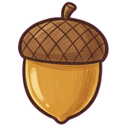

탐정 이름 짓기 화면 설계
첫 실행에 한 번만: 프롤로그 → 이름 짓기 → 튜토리얼. 그림은 실제 자산(사무소 배경, 탐정, 신분증, 말풍선·버튼)으로 맞췄다.

Welcome to my office. I'm the detective of Acorn Hollow. My ears catch every word.
▶ 다시 듣기해석
Every detective needs a name. What's mine?
탐정에게는 이름이 필요해. 내 이름은 뭘까?
▶ 다시 듣기해석
해석을 누른 상태. 대사가 끝나면 신분증이 아래에서 올라온다.Hazel
DETECTIVE
ACORN HOLLOW
🎲 다른 이름도장 찍기
다른 이름은 추천 이름을 하나씩 채운다. 비어 있으면 도장 찍기가 흐리다.Hazel
DETECTIVE
ACORN HOLLOW

I like it. Let's get to work!
▶ 다시 듣기해석
시작하기
시작하기 → 튜토리얼.흐름
- 앱을 열 때(이름이 없으면): 프롤로그 → 이름 짓기 → (도장) → 홈. 터치 전에 소리가 막히면 첫 대사는 글자로 먼저 보이고 첫 터치에 들린다. 이미 튜토리얼을 본 기기도 이름이 없으면 한 번 본다.
- 프롤로그 대사는 넘길 수 있지만 이름은 건너뛸 수 없다. 대신
다른 이름으로 바로 채울 수 있다. - 이름 바꾸기:
내 기록> 설정에탐정 이름 바꾸기→ 같은 신분증 화면(②의 대사 없이 ③부터, 오른쪽 위 닫기로 그대로 나갈 수 있음).
입력 규칙
- 1–12자, 앞뒤 공백 제거. 영어·한글 모두 허용(영어 앱이지만 아이들이 한글 이름을 쓰고 싶어 할 수 있음). 이모지·기호는 받지 않는다.
- 추천 이름(
다른 이름): 숲·도토리 느낌의 영어 이름 목록에서 차례로. 예: Hazel, Nutty, Maple, Pip, Acorn, Chestnut, Sunny, Juniper. - 화면에 조작 설명 문장은 넣지 않는다. 무엇을 할지는 탐정의 질문 대사(+
해석)와 비어 있는 신분증 줄, 깜박이는 커서로 알 수 있다.
이름이 쓰이는 곳
- 글자로만: 홈 사무소 문패, 노트(수사 수첩) 표지, 사건 종결 서류(“Case closed by Hazel”), 내 기록.
- 음성에는 넣지 않는다. NPC는 지금처럼 “detective”라고 부르고, 탐정 대사도 이름을 말하지 않는다 → 이름을 바꿔도 다시 녹음할 필요가 없다.
- 저장:
localStoragepioo.detectiveName.리셋이 함께 지운다.
필요한 것
- 그림: 사무소 배경·신분증·탐정 얼굴은 준비됨. 도장은 기존 도토리 아이콘을 붉은 잉크로 칠해 쓴다(추가 생성 없음).
- 음성(탐정 목소리 Grady): 프롤로그 2줄, 이름 묻기 1줄, 도장 뒤 1줄 = 4줄.